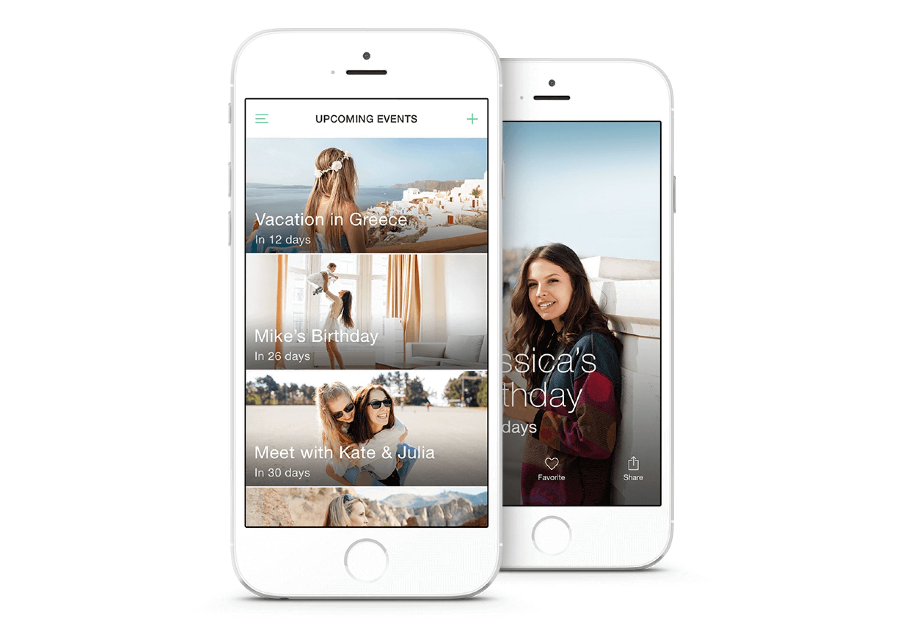
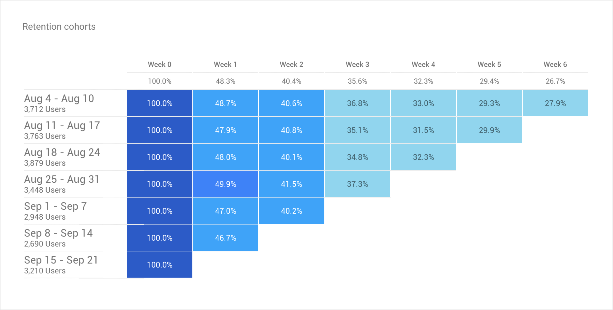
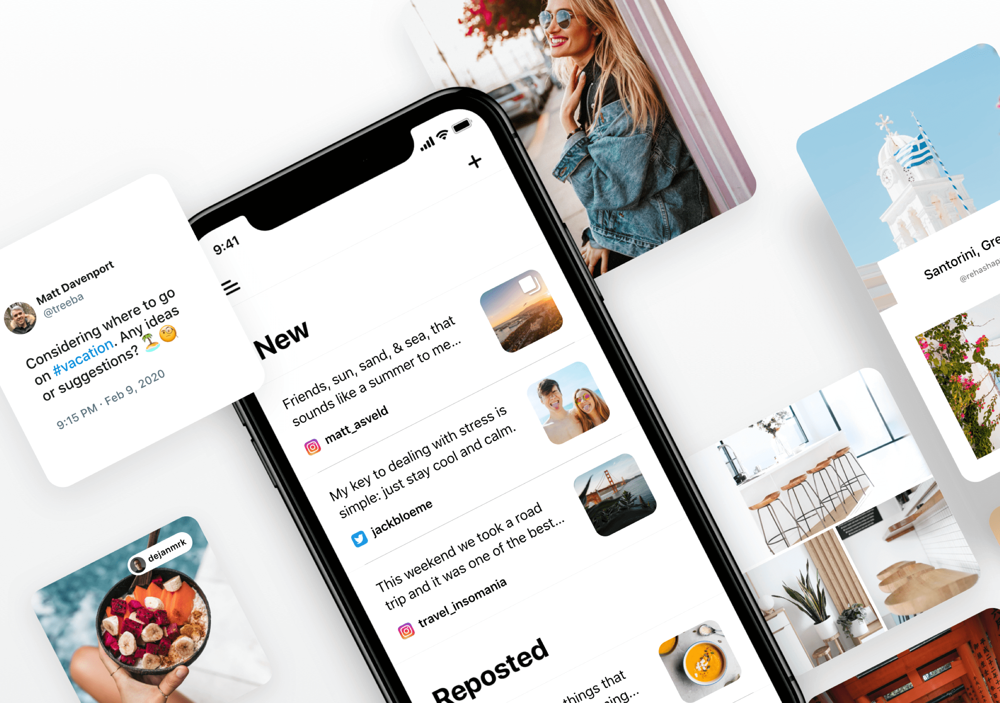
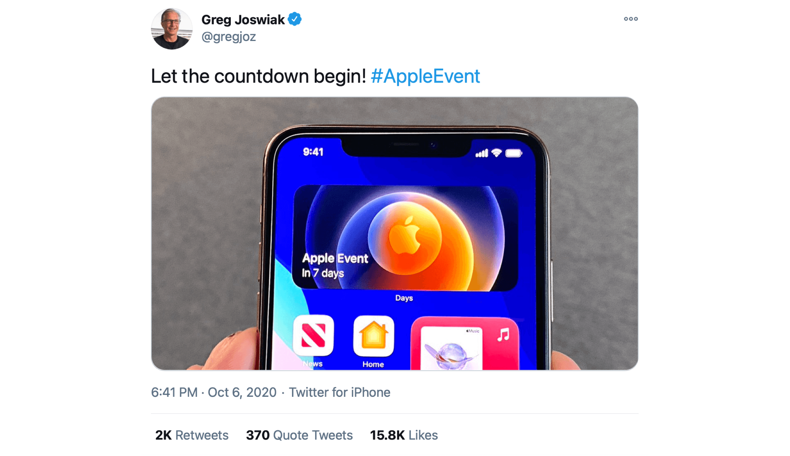

Days
The days you will remember

Days Countdown App
Days is a beautiful countdown app to all the events that matter to you. Events are important, they're the small things in life that matter the most. Whether it's a wedding, a holiday or just a night out with your friends, Days helps you countdown to those special moments.
Days started as a side project back in 2015. I was participating in a design contest and won. This was the beginning of a new business and friendship relationship with an iOS developer based in Manchester, UK Matt Davenport. Since then we have collaborated on couple of iOS projects, but Days still remained our most important and passioned project to date. We are still improving, iterating and most importantly learning and making sure our users are satisfied.
Days on the App Store
Days Website
One of my favorite apps on my iPhone! .This app is simple, beautiful and very useful. It’s great to be able to see a list of things I’m looking forward to as well as building anticipation as an event nears. Please support this app by upgrading to Pro and you won’t regret it.by shohel: India
Amazing! . I personally thought this app is amazing. It is literally everything i was looking for in a countdown app. It modern and it doesn’t look basic it has a modern look and touch to it. I would like to be able to add a location but everything else i love about the app!! I would highly recommend to friends and family and anyone that is looking for a countdown app!.by shohel: India
Huge fan . Great UI. Very simple. Very reliable. And very straightforward. I appreciate how clean it is. A recommendation for the future is custom notifications for events. Great work!by shohel: India
Days v1.0
We have launched the first version of Days in 2015. To learn more about the the problem, the design process and the outcome of the first launch, then read the Days v1 case study.

Number of App downloads:
637,155 up to the release of 2.0
Peak engagement:
140k MAU, 22k DAU
Engagement at launch of v2.0:
112k MAU, 19k DAU

Days 2.0
After our first launch we have closely monitored and collected feedback from customers. We have addressed and implemented all of the most requested features. Our app was growing and at the we had over 140k monthly active users. As we were identifying new opportunities to scale the app, we have decided to prepare a better foundation to support future ideas and direction. Redesigning and rebuilding the app in code was a necessary step to move forward. With releasing Days 2.0 we made the app faster, smarter and more beautiful than ever.
List of improvements in Days v2.0:
- A completely redesigned experience
- Recurring events - counting down yearly to birthdays, anniversaries and much more
- Time based events - setting an exact time for an event
- More countdown formats - counting with weeks, hours, minutes and more!
- Unsplash integration - Searching thousands of beautiful photos by professional photographers, completely free!
- Unlocking more additional events through sharing
- Reorder categories and delete default ones
- Previous and upcoming events all on the same screen as a one single continued timeline
- A completely redesigned experience
- Purposefully created sharing images
My role
The Days team has only two members. Me as the lead designer and Matt as the iOS developer. Occasionally we also had some help from some friends and family members. While the roles have been somewhat defined, we both had to go beyond our capabilities, to keep the app up to speed, deliver, iterate, test and generate revenue.
I have been the lead designer for the iOS app from the very beginning, defining the brand and the frameworks and the core user experience. I designed most of the marketing materials, created promotional videos and designed and coded the app's websites.
I worked alongside Matt to uncover insights into customer feedback, requirements and helped prioritize business goals and revenue models.
I worked very closely with Matt on the implementation of the features and in some cases even had my hands on Swift and Objective-C framework to help tweak some of the app animations and better understand the development process.
Tests and optimizations
Every design and product decision carries some risk. Rarely anything can nail on the first try and there's always room for improvement. As there are many tools to test features and product direction, most of our design and product decisions were based on the user feedback and gut feeling.
A/B testing
We have A/B tested the upgrade screen. In the past we already conducted couple of test around pricing, discounts and the way how we communicate and convince users to upgrade to pro.
This time we have tested a different layout for upgrading. Our existing layout listed all the pro features as a list with the purchase button bellow. The new layout had a comparison table, couple of app store reviews and QA around purchases, for example what are users paying for, is it a one time purchase, etc..
We have measure the number of upgrades through a specific time period and seen notable improvements with the second layout.
Price test
Another screen that we have tested was an exclusive offer for our most loyal users. We have selected a target group based on their amount of app usage and then show them the offer and see if they have upgraded.
Landscape vs portrait
Optimized App Store gallery can boos the conversion rate and is the first important impression of the app. We have run couple of App Store image test, one of which was landscape and portrait image orientation.
After some personal insights and some research landscape image can improve the user conversion. Landscape images can have more impact on search traffic as they take the full width and grab more of the user's attention. However we have not seen an increased improvement in the tap-through-rate from the search results to the listing.
Audience and demographics
Probably the most important part of the marketing is knowing our audience. By analyzing the statistics of users including the age, gender and demographics we are able to customize a marketing strategy and scale where needed.
Our demographic from last calendar year Jan 1 - Dec 31 2019:
The Outcome
Days website
I was responsible for the design and the development of the website. It's a simple page built with HTML and CSS. The website is a showcase website, whose objective is to present information about the app. While in the past we have listed the app's features, this time we left that up to the user to download the app and explore it themselves.

Special mentions
On October 6th 2020 Greg Joswiak Apple's SVP of Marketing tweeted a photo of Days Countdown app, showing the new Days widget functionality on the upcoming iOS 14, just days before it's official release.
Joswiak's tweet sparked a significant increase in App Store downloads and countless questions about the Days app. We have also received countless 5 star App reviews and feedback on how much people love the Days app and it's widget functionality.

Featured in App Store
Days was featured by Apple, as a fantastic contribution to the App store, under the tagline "Great on iOS 14”.
Delightful interactions
Micro-interaction are the delightful moments the users have while using the product. The small details can make the user experience more fun, emotional and human. Micro-interaction are events to serve different functions like communication a feedback as a result of an action, enhance sense of direct manipulation, help visualize the results of a certain action.
Days 2.0 release
We created an announcement video for our existing customers that would inform the users about the most important features in 2.0 release.
Purchase
We love our customers and appreciate when they purchase the pro version and support our ongoing development. We wanted to communicate this to the customers when making the purchase as make the whole experience feel more human and emotional.
The challenges
No product development comes without any challenges or obstacles. Here are couple of interesting challenges, informations and insights:
Free events
One of the main challenges has been around free events and revenue. For our first v1 release we have been sending messages to user to support the development and from where they could choose between 3 different amounts they wanted to donate and support us.
In the later version we have changed the monetization and decided to limit the number events to 5. Which did result in a lot of negative feedback from our customers. As we have always kept the app ad-free, we come up with a solution that gives the user the ability to share the app with their friends in order to gain more events. So every time users run out of free events they can get 2 more events by sharing the app.
iCloud Backup
Just recently we have released an update that has iCloud backup. Days never had iCloud backup and if the user has switched a phone or even just deleted the app, all the events were gone for good. I even encountered the problem myself, by replacing my iPhone and then I had to re-create all the events. We have seen a lot of negative feedback and frustration because of this.
Event sizes
Our primary and the most important screen is the event list of all events. In the latest 2.0 update we have changed the main timeline to include both upcoming and previous events. At the same time we have also increased the event size, so that the images can stand out even more. However that has resulted in some mixed customer satisfaction. On smaller iPhones the event size matters, some users even said they like to see as much events as possible without scrolling, to get that overview over all their events.
For some time we have been opinionated about changing the event size. However as more customers expressed the concerns around larger event size we have decided to solve the problem. We experimented with different event sizes, but couldn't decide on how to please all users. Therefore we decided to release event size settings. Now the size of the event is customizable and users can choose between three different sizes.
App use cases
Couple of times we have been surprised by the way how customer use Days. One customer said they'd used Days to take a photo of themselves at a certain date so they could compare it in the future. Another customer is using the app for tracking wedding, bridal showers, dress delivery, bachelorette party and the wedding itself. And some are just using it for exams tracking.
Waterfall vs agile
As we are not fully committed to the app development and still do it as a side project, we have quite often fallen into the waterfall development process. Sometimes it took as months to release a feature, that we could release as an MVP in couple of weeks and then iterate from there. As some features still take months to develop due to team size limitation, we have decided to release features early, measure, iterate and improve from there.
Customer feedback
For direct customer feedback we have setup HelpScout, an email-based customer support platform. We have separate the feedback into two segments that separates problem reports and feature suggestions. Unfortunately we have sometimes received up to 5 emails per day and with Days being a side project we were unable to respond to all of them. One of the ideas we had, but have not build, was to create a Help Center section within the app that would have the most common QA. This would help eliminate some of the feedback. However we have not decided to pursue with the idea due to the amount of investment need and the need to hook the content with a documentation service.
Feedback and reviews
Customer reviews are good indicator that users are engaged with the app. No matter how long or short a review is, user has to take the time to write a review. Both compliments and complaints are key to knowing what to improve or what are the areas that lack some functionality or cause frustrations to the user. Any review can help us understand the user needs.
For direct user feedback we have setup HelpScout, an email-based customer support platform that allows our customer to send feedback from within the app. We have separated the feedback into two segmentations one reporting a problem and second suggesting a feature.
Overall we have 2,617 reviews with an average rating of 4.8 out of 5.
Helps in so many ways!This app is such a help. I’ve kept track of time between medical procedures, work deadlines and even days to my retirement. That last one helps to put things in perspective!by shohel: India
One of my favorite apps on my iPhone! This app is such a help. I’ve kept track of time between medical procedures, work deadlines and even days to my retirement. That last one helps to put things in perspective!by shohel: India
So convenient!This app is such a help. I’ve kept track of time between medical procedures, work deadlines and even days to my retirement. That last one helps to put things in perspective!by shohel: India
Aesthetic Countdown This app is such a help. I’ve kept track of time between medical procedures, work deadlines and even days to my retirement. That last one helps to put things in perspective!by shohel: India
I love this app so much.This app is such a help. I’ve kept track of time between medical procedures, work deadlines and even days to my retirement. That last one helps to put things in perspective!by shohel: India